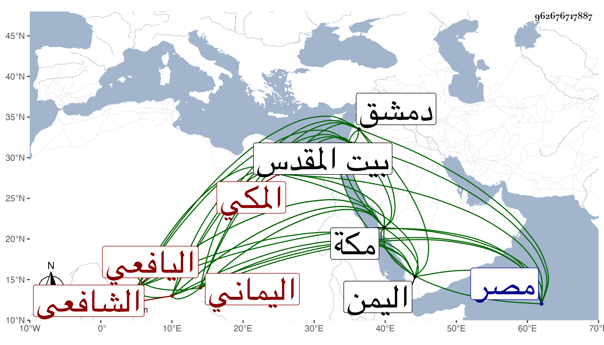

0902Sakhawi.DawLamic.ITO20230111-ara1.EIS1600.962676717887
Biography ID: 962676717887
310
محمد بن عبد الوهاب بن عبد الله بن أسعد بن عثمان بن سليمان بن فلاح الجمال أبو الخير بن التاج أبي محمد بن العفيف أبي محمد اليافعي اليماني المكي الشافعي الماضي أبوه ويعرف كسلفه باليافعي . ولد في جمادى الآخرة سنة سبع وتسعين وسبعمائة بمكة ونشأ بها فحفظ القرآن وأربعي النووي وعرضها في سنة تسع والمنهاج الفرعي وعرضه في سنة ثلاث عشرة ، واشتغل يسيرا وسمع على الزينين المراغي ومحمد بن أحمد بن محمد بن المحب الطبري والجمال بن ظهيرة وابن الجزري وغيرهم ، وأجاز له العراقي والهيثمي وابن صديق وعائشة ابنة ابن عبد الهادي وخلق ودخل الديار المصرية والشامية وبيت المقدس صحبة التقي الفاسي في سنة تسع وعشرين وكذا دخل اليمن مرارا للاسترزاق وكان يذكر أنه سمع بدمشق والخليل ولكنه لم يعين المسمع ولا المسموع وقد حدث باليسير . ولقيته بمكة فكتبت عنه وكان خيرا محسنا متوددا لطيف العشرة . مات في شعبان سنة ثمان وخمسين رحمه الله ومما كتبته عنه قوله :
| رعى الله أياما تقضت بمكة | مع الأهل والأوطان والشمل جامع |
| وحيا لييلات تقضت برفقة | وراء مقام المالكي هواجع |
| ترى تجمع الأيام بيني وبينهم | وأصبح مسترضي من الله قانع |
